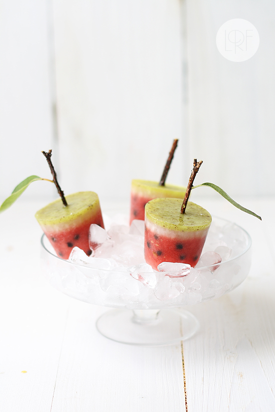
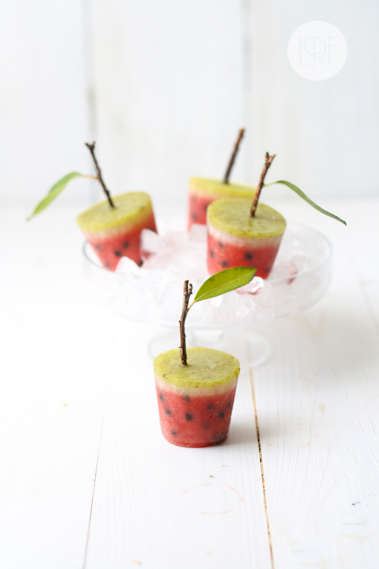
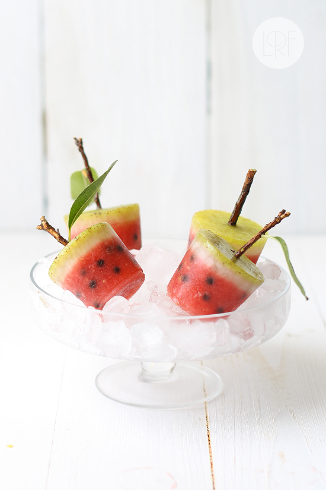

{kind=link}

{kind=link}

{kind=link}

Watermelon Ice Pops
Prep time: 20 min (plus freezing time)
Cooking time: no cooking needed
Yield: 9 ice pops
Ingredients
- Watermelon layer
- 350 g watermelon, cubed and unseeded (12 oz)
- 50 g sugar (1/4 cup)
- juice of 1/2 lemon
- 1/4 cup mini chocolate chips
- Lemon layer
- juice of 1/2 lemon (1/5 cup)
- 150 ml water, very cold (3/5 cup)
- 2 heaped tbs sugar
- Kiwifruit layer
- 1 kiwifruit
- 50 ml water, very cold (1/5 cup)
- 2 tbs sugar
- In a blender combine watermelon cubes, lemon juice and sugar. Pour in 9 small disposable paper or plastic cups (about 3 oz capacity). Freeze until puree is slightly slushy, but not quite solid, about 2 to 3 hours. Remove from freezer, and add in chocolate chips, using a wooden skewer to put them in place. Put back ice pops in the freezer for another 30 minutes, and then place a twig or stick on every ice pop. Freeze for at least 4 hours
- Prepare lemon layer just by combining all ingredientes. Pour a thin lemon layer over watermelon layer in every ice pop. Freeze again for at least four hours
- Prepare kiwifruit layer by blending all ingredientes. Pour kiwifruit mixture evenly over lemon layer in cups. Freeze for at least 4 hours or until completely solid.
- Cut disposable cups to unmold
Preparación
NOTES:
- Styling inspired by this recipe by Martha Stewart
- If you have prepared this recipe, and want to send me a pic and your comments, please use this form . If you wish to subscribe to receive my recipes in English please do it here